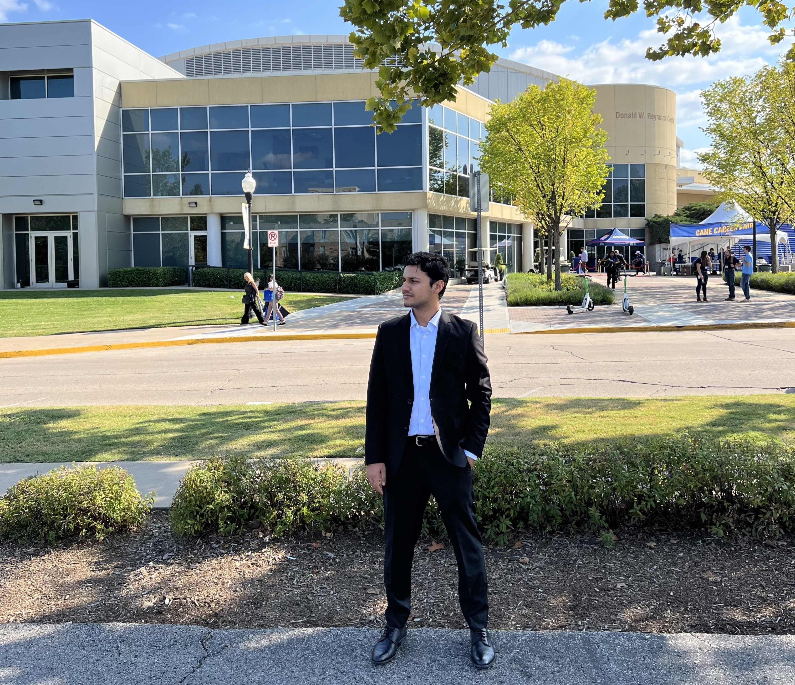
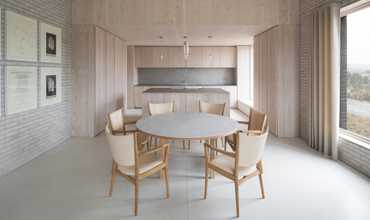
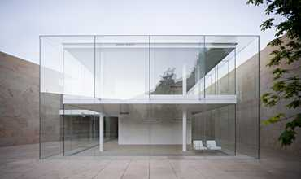

Research
How LLMs behave under efficiency constraints
Evaluation frameworks for KV-cache eviction, with attention to whether conclusions hold across model families rather than on one benchmark.
PhD Researcher and Software Engineer
My PhD research at the University of Tulsa focuses on LLM inference: how KV-cache compression behaves across model architectures and what that means for deployment. Before that, I spent two years building production web systems.

Overview
I move between research and engineering: designing careful experiments around models, and building the software that makes the results usable.
Research
Evaluation frameworks for KV-cache eviction, with attention to whether conclusions hold across model families rather than on one benchmark.
Applied ML
NLP pipelines, LLM-generated attack graphs, and statistical analysis of archaeological data, each validated with the right test for the claim.
Engineering
E-commerce platforms, internal tools, and real-time systems built with attention to performance, reliability, and delivery.
100+
attack graphs generated by an LLM framework from NVD and CVE data
2,280
framework statements analyzed with an NLP pipeline
40%
improvement in e-commerce engagement
50%
faster releases after automating deployment
Research
PhD and master's research at the Tandy School of Computer Science, University of Tulsa.
LLM inference
Designed an evaluation framework for key-value cache eviction strategies and found that their rankings did not transfer between LLM architectures, in a paired comparison on Qwen3-8B and Llama-3.1-8B.
LLMs for security
Engineered an LLM-based framework that generated over 100 attack graphs from NVD and CVE vulnerability data, reducing manual analysis time by 40%.
NLP and curriculum design
Built a Sentence Transformers pipeline with permutation testing over 2,280 NICE statements, showing core competencies form the corpus's semantic center (p < 10-4) and using them to derive learning outcomes for an Introduction to Cybersecurity course.
ML for cultural heritage
Applied MCA and PCA to pose-estimation data from a museum collection of ancient ceramic figures and organized them into posture clusters. Published at EVA London 2026; journal extension in submission.
Reinforcement learning
Modeled and implemented a reinforcement learning approach to sustain cooperation among agents in multi-agent systems during master's research.
AI education
Developed course content, assignments, and lab modules for Artificial Intelligence: Principles & Practices, a high school AI curriculum delivered to students in Tulsa, OK.
Analysis of Pose Estimation of West Mexican Ceramic Figures using Machine Learning.
EVA London Conference Proceedings, 2026. doi:10.14236/ewic/EVA2026.64
KV-Cache Eviction Rankings Need Not Transfer: A Paired Comparison on Qwen3-8B and Llama-3.1-8B.
2026 International Conference on Large Language Models (LLM).
Pose Estimation of West Mexican Ceramic Figures: A Machine Learning Landscape.
Journal of Archaeological Science.
An Analytical Approach to Cybersecurity Curriculum Design.
Built a commerce platform with React, Spring Boot, and Kubernetes to improve customer engagement, transaction speed, and production resilience under heavier traffic.

Replaced spreadsheet-driven analysis work with an Angular and ASP.NET Core application that reduced manual effort and improved responsiveness.
Built a recommendation workflow with Python, OpenAI API, and PostgreSQL to improve relevance, engagement, and query performance.

Designed a chat platform with Angular, Spring Boot, WebSocket, and MySQL to reduce latency and improve retrieval speed.
Experience
July 2025 to present
University of Tulsa | Tulsa, OK
Research on LLM inference efficiency, LLM-generated attack graphs, NLP-driven curriculum analysis, and machine learning for archaeological data. Developed a high school AI curriculum delivered in Tulsa.
Sep. 2024 to May 2025
University of Tulsa | Tulsa, OK
Built an LLM-based recommender system for 2,000 users and implemented reinforcement learning to sustain cooperation in multi-agent systems.
May 2024 to Aug. 2024
Arcosa, Inc. | Tulsa, OK
Modernized steel analysis workflows by replacing Excel with a web application, building ASP.NET Core APIs, and delivering an Angular interface for internal teams.
Sep. 2023 to present
University of Tulsa | Tulsa, OK
Taught and assisted in four undergraduate courses with 9 to 280 students, including Introduction to Programming, Fundamentals of Algorithms, and Database Systems. Led weekly lab sections and supervised final projects.
June 2021 to July 2023
TechImpulsers | Remote
Built high-traffic product features with React and Spring Boot, improved scalability through microservices, automated releases with Jenkins and Docker, and mentored junior developers.
June 2021 to Aug. 2021
University of Engineering and Technology | Lahore, Pakistan
Built a real-time fault detection and monitoring prototype for power systems with under one second reporting latency and 95% fault identification accuracy.
Aug. 2026 to present
University of Tulsa
Keeps member and participation records, manages the club's shared channels and files, and sources events that grow community participation.
June 2025 to present
University of Tulsa
Represents the Computer Science department, votes on graduate travel awards and funding requests, and serves on the Public Relations Committee.
Skills
Model evaluation, NLP, and statistical analysis for research questions.
Frontend and backend delivery for web products and internal tools.
Infrastructure, deployment, and tooling that keep software and experiments dependable.
Education
Expected 2028
University of Tulsa, Tulsa, OK
Research in machine learning and LLM inference efficiency. Coursework in Machine Learning and High Performance Computing.
May 2025
University of Tulsa, Tulsa, OK
GPA 3.88. Coursework in Analysis of Algorithms, Machine Learning, Statistical Pattern Recognition, and Fundamentals of Cyber Security.
June 2021
University of Engineering and Technology, Lahore, Pakistan
Best final year project and PEEF scholarship recipient.
Additional Signals
Program
University of Tulsa
Built business and product thinking alongside technical training.
Practice
LeetCode, GitHub, and shipped projects
Active problem solving backed by real product delivery and experimentation.
Resumes
Both cover the same background. The research version leads with publications and research experience; the industry version leads with shipped software and measurable product outcomes.
Research and development
For research scientist, applied scientist, and research internship roles.
Industry
For software engineering and machine learning engineering roles.